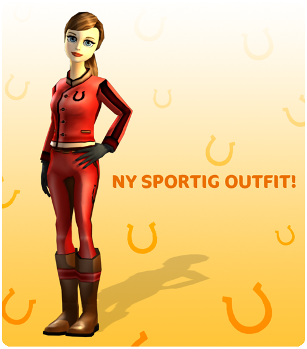

Sziasztok!
Itt van a heti frissítés!
Új ruhák és felszerelések:
Több üzlet is bővítette a kínálatát, és úgy hírlik, hogy jövő héten egy új, nagy ruhacsomag is érkezik Jorvikra.

Tájdíszek:
A környéken itt-ott további apró részleteket frissítettünk.
Továbbra is azon dolgozunk, hogy a Star Stable még jobb legyen!
Üdvözlettel: